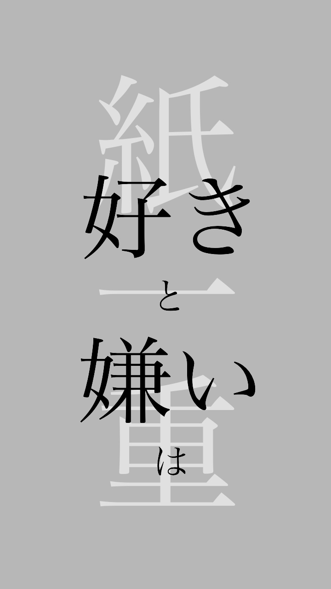
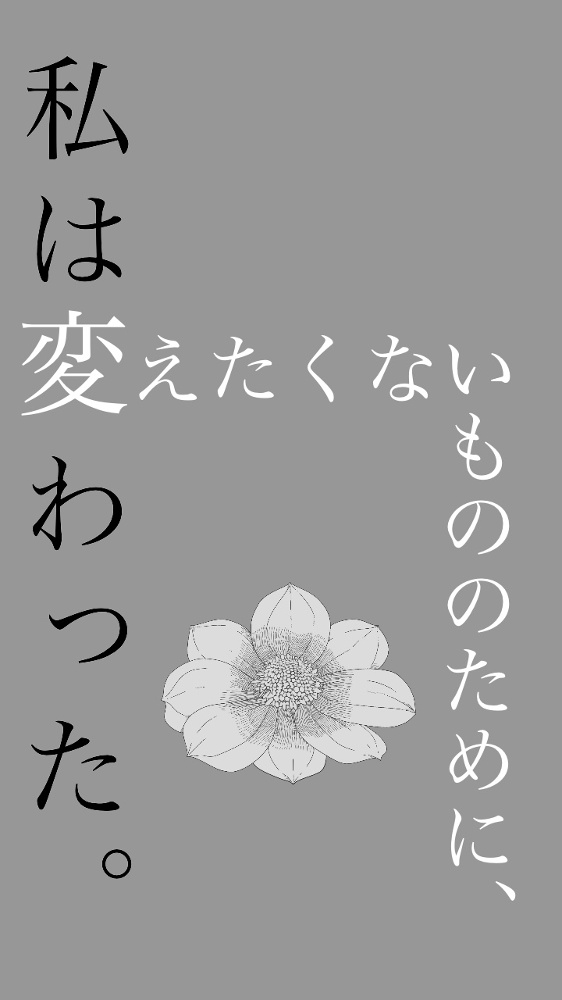
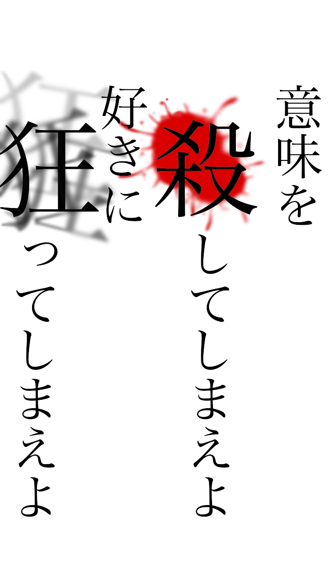

- 好きと嫌いは紙一重 
- 私は変えたくないもののために、変わった。 
- 邪魔 
Picture
作った画像を紹介するページです。
私が一番最初に作ったものです。紙一重の「一」を、「好き」と「嫌い」の間に挟んだ事がこだわりです。
好きなゲームの中で一番好きな言葉です。逆説的な表現を視覚的に表現するために、白と黒で分けてみました。真ん中にある花はフリー素材で、その言葉を発したキャラクターが「変わった」ことの1つに関連しています。
私の好きな、syudouさんの「邪魔」という曲の中から詞を引用して作りました。マイノリティな人間の中にある狂気的なものを表現したかったです。